Content Outline
- 1 The Current Enterprise Data Platform Architecture
- 1.1 Architectural Failure Modes
- 2 The Next Enterprise Data Platform Architecture
- 2.1 Data and Distributed Domain Driven Architecture Convergence
- 2.2 Data and Product Thinking Convergence
- 2.3 Data and Self-serve Platform Design Convergence
- 3 The Paradigm Shift towards a Data Mesh
1 The Current Enterprise Data Platform Architecture
The evolution of data platforms has transitioned through three distinct generations, each attempting to solve the scaling challenges of the previous one. The first generation relied on proprietary enterprise data warehouses and business intelligence platforms. These solutions often left companies with massive technical debt in the form of unmaintainable ETL jobs and reports that only a small group of specialized people understood.
The second generation introduced the big data ecosystem with the data lake as a "silver bullet." While it enabled pockets of R&D analytics, it frequently created "data lake monsters" operated by central teams of hyper-specialized data engineers.
The third and current generation has moved toward cloud-native managed services, real-time streaming (Kappa architecture), and unified batch/stream processing. However, despite these technical advances, it still suffers from the same underlying monolithic characteristics that led to the failures of the past. The data platform remains a centralized piece of architecture designed to ingest data from all corners of the enterprise, cleanse it, and serve it to a variety of consumers, creating a significant bottleneck as data sources proliferate.
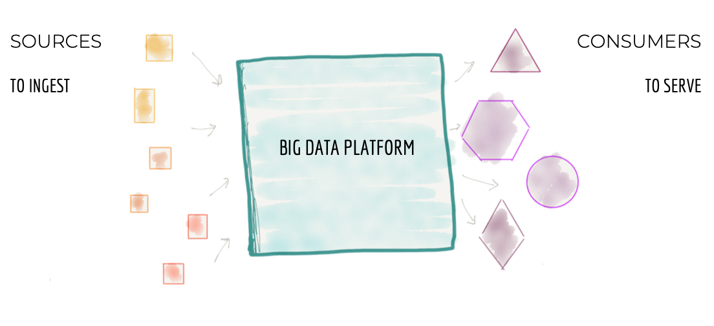
1.1 Architectural Failure Modes
Modern centralized data platforms suffer from three primary failure modes that prevent them from scaling effectively:
- Centralized and Monolithic: While we have successfully applied Domain-Driven Design (DDD) to operational systems, we have largely disregarded domain concepts in data platforms. We have moved away from domain-oriented ownership to centralized, domain-agnostic ownership. The assumption that we must ingest and store all data in one place to extract value constrains our ability to respond to the growing number of data sources.
- Coupled Pipeline Decomposition: Most platforms are decomposed into a pipeline of data processing stages (ingestion, preparation, aggregation, serving). This functional cohesion around technical implementation creates high coupling. This decomposition is orthogonal to the axis of change; enabling a single new business feature requires synchronized changes across every stage of the pipeline, slowing down delivery significantly.
- Siloed and Hyper-specialized Ownership: Data engineers are often siloed from the operational units where data originates or is consumed. They are grouped based on technical expertise in big data tooling, rather than business knowledge. This leads to a disconnect: source teams have no incentive to provide high-quality data, while frustrated consumers fight for a spot on the overstretched platform team's backlog.
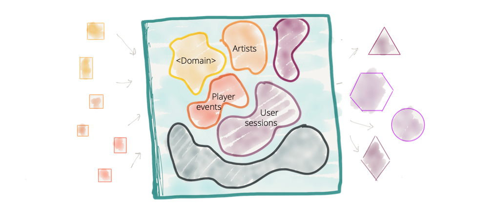
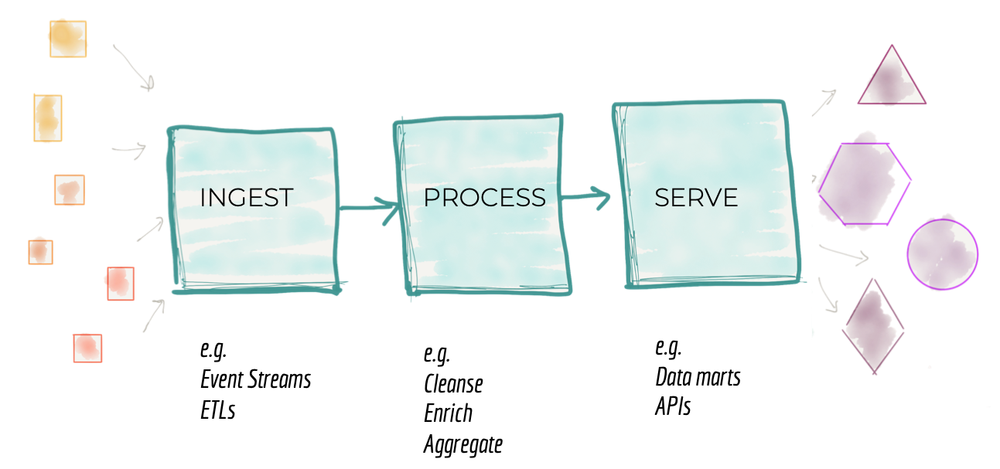
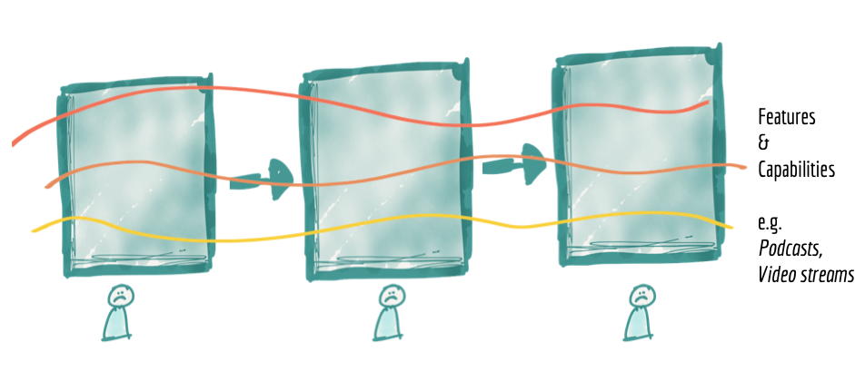
The functional decomposition of the platform—into ingestion, preparation, and serving layers—is orthogonal to the axis of business change. In a typical scenario, enabling a single new feature, such as "visibility to podcast play rates," requires a synchronized change in every component of the pipeline. Since the stages are owned by different technical specialists, this creates high coupling and forces the entire monolithic platform to be the smallest unit of change. The result is a system that resists agility because even minor domain-specific updates require a global coordinated effort.
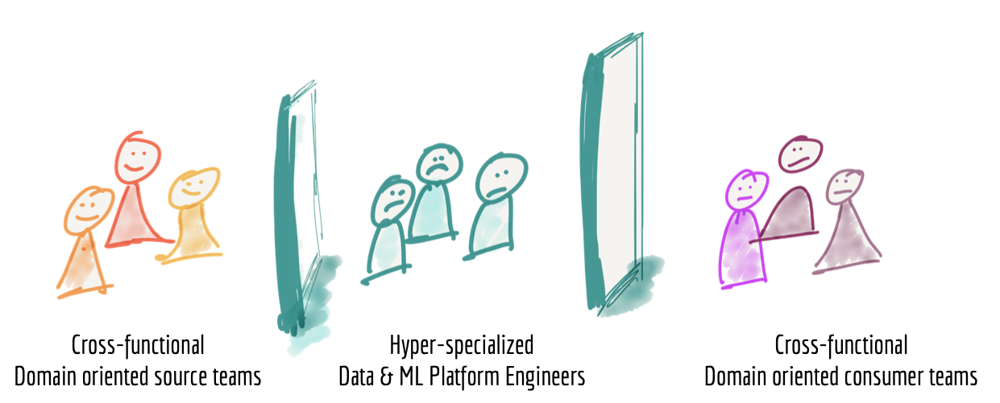
The organizational structure often mirrors this technical silos. We find teams of hyper-specialized data engineers who are isolated from the operational domains where data originates or is consumed. These engineers are grouped based on their technical expertise in big data tooling, but they often lack the business context necessary to interpret the data they process. This creates a friction-filled dynamic: source teams have no incentive to provide meaningful data, while consumers struggle to get their needs prioritized in an overstretched central backlog.
2 The Next Enterprise Data Platform Architecture
The next generation of data platforms lies in the convergence of Distributed Domain Driven Architecture, Self-serve Platform Design, and Product Thinking with data. We must move beyond the monolithic data lake toward an intentionally distributed Data Mesh architecture. This shift requires us to embrace the reality of the ubiquitous and distributed nature of data, applying the same techniques that modernized operational systems to the world of analytics.
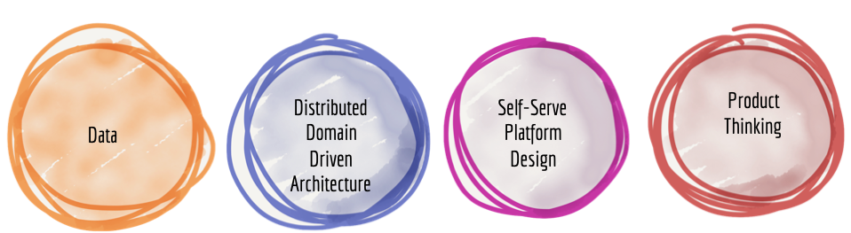
2.1 Data and Distributed Domain Driven Architecture Convergence
To decentralize the monolithic platform, we must reverse how we think about data ownership. Instead of flowing data from domains into a centrally owned lake, domains must host and serve their own datasets in an easily consumable way.
In this architecture, the architectural quantum is the domain itself, not a pipeline stage. Data processing pipelines (cleansing, aggregation) become internal implementation details of the domain. Source domains provide "facts" (immutable events), while consumer domains transform these into specialized structures (e.g., graphs) for specific use cases. The physical location of the data is secondary to the logical ownership by the domain.
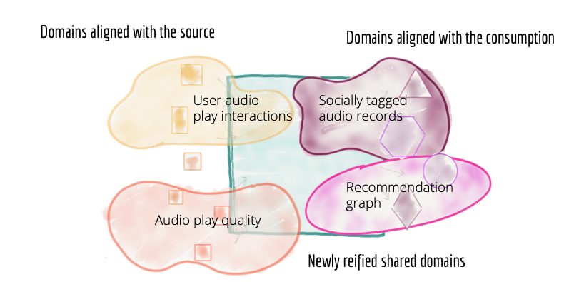
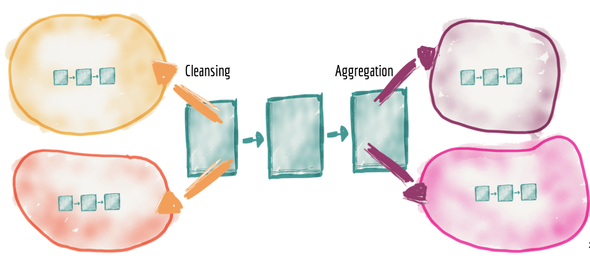
In a Data Mesh architecture, the data pipeline is simply an internal complexity and an implementation detail of the data domain. This marks a radical shift: instead of having a central team responsible for every transformation stage across the entire enterprise, each domain handles its own internal data processing—cleansing, enrichment, and aggregation—independently. By distributing the pipelines, the domain team can ensure that the transformation logic is perfectly aligned with the business semantics they own, without waiting for a central platform team to implement their specific requirements.
2.2 Data and Product Thinking Convergence
Domain teams must apply product thinking to their data, treating data assets as products and the rest of the organization (data scientists, ML engineers) as their customers. To provide a high-quality experience, data products must have the following characteristics (**D.A.T.S.I.S.**):
- Discoverable: Registered in a common data catalog with rich meta-information.
- Addressable: Accessible via a unique, global address using standard protocols.
- Trustworthy: Backed by explicit Service Level Objectives (SLOs) for truthfulness and quality.
- Self-describing: Accompanied by well-described semantics, syntax, and sample datasets.
- Interoperable: Following global standards for field formatting, metadata, and identity.
- Secure: Governed by global access control policies applied at the point of consumption.
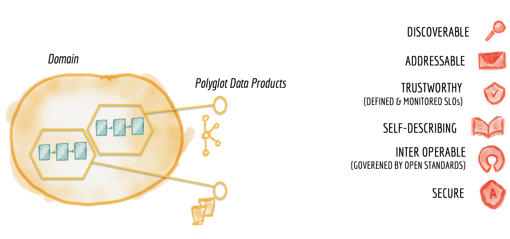
To satisfy the "data as a product" principle, every data product must exhibit six core characteristics, often summarized by the acronym D.A.T.S.I.S.:
- Discoverable: A data product must be easy to find. This is achieved by registering it in a common data catalog that includes rich metadata, such as its origin, lineage, sample data, and quality metrics. Without discoverability, data becomes "dark data," hidden within silos.
- Addressable: Once discovered, a data product must have a unique, global address that allows users to access it programmatically. These addresses must follow a standard convention across the organization to enable automated discovery and consumption.
- Trustworthy and Truthful: Consumers must be able to trust the data. This requires producers to define and adhere to explicit Service Level Objectives (SLOs) for data quality, freshness, and accuracy. Any deviations from these standards must be monitored and communicated automatically.
- Self-describing: A data product should be usable without needing to call the producer team. It must include well-defined schemas, clear semantics, syntax descriptions, and documentation that explains the business context and how to join it with other products.
- Interoperable: To extract value from multiple domains, data products must be able to work together. This is enabled by global standards for field formatting, common identification systems (e.g., a unified "Customer ID"), and standardized metadata formats.
- Secure: Access control must be strictly enforced at the point of consumption. While ownership is decentralized, security policies are defined globally by the federated governance team and applied consistently across all data products in the mesh.
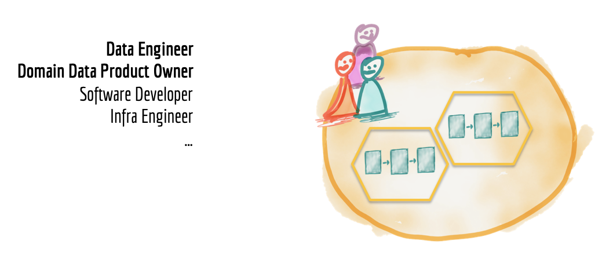
To make the "data as a product" model successful, domain teams must be augmented with new roles: Data Product Owners and Data Engineers. The Data Product Owner is accountable for the product's success, ensuring it meets consumer needs while staying aligned with business goals. Data Engineers bring the technical expertise to build and maintain the internal pipelines and interfaces. This cross-functional setup ensures that the domain has full end-to-end ownership of its data assets—from the operational source to the analytical product—making them business-aligned, technically robust, and easy to consume by the rest of the organization.
2.3 Data and Self-serve Platform Design Convergence
To avoid duplicating effort and complexity, a domain-agnostic infrastructure team provides a self-service data platform. This platform harvests the common infrastructure capabilities (storage, compute, streaming) and provides them as reusable components.
The platform must remain domain-agnostic, hiding underlying complexity so domain teams can focus on data logic rather than infrastructure setup. A key success criterion for this platform is significantly lowering the "lead time" required to create and deploy a new data product.
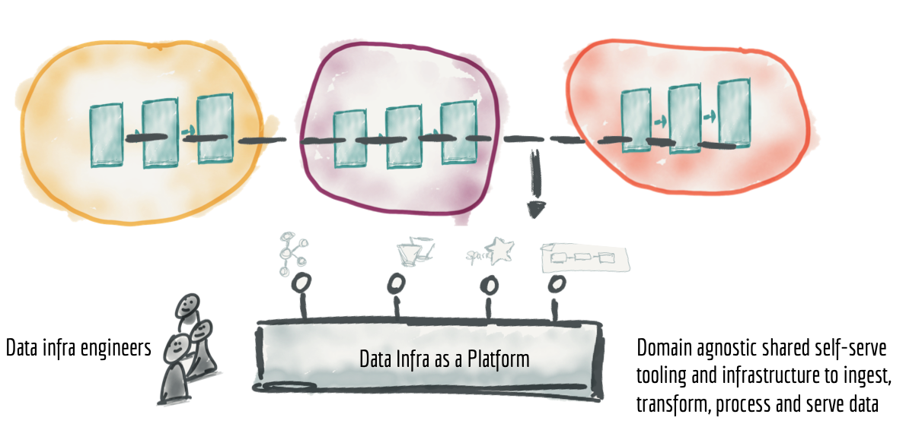
3 The Paradigm Shift towards a Data Mesh
The transition to a Data Mesh is a fundamental shift in how we approach data at scale. It requires moving from ingesting data into a central lake to serving data products from business domains. We shift from extracting and loading to discovering and using, and from flowing data via centralized pipelines to publishing events as streams.
The Data Mesh is not just a technology change; it is an ecosystem of interoperable data products governed by global standards and enabled by a shared self-serve infrastructure.
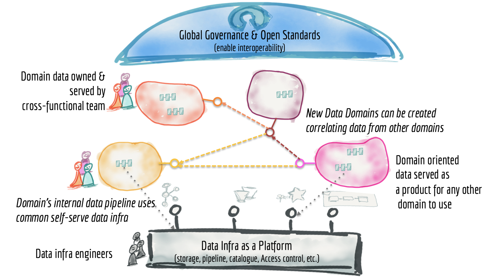
Source: How to Move Beyond a Monolithic Data Lake to a Distributed Data Mesh (Martin Fowler)
Key takeaways
- Centralized monolithic platforms fail to scale due to organizational bottlenecks and technical coupling.
- Data Mesh decentralizes data ownership, making business domains responsible for their own analytical data.
- Data products must be D.A.T.S.I.S. (Discoverable, Addressable, Trustworthy, Self-describing, Interoperable, Secure).
- The self-service platform abstracts infrastructure complexity, lowering the barrier for domains to produce data.
- Federated governance ensures global consistency and interoperability without central bottlenecks.